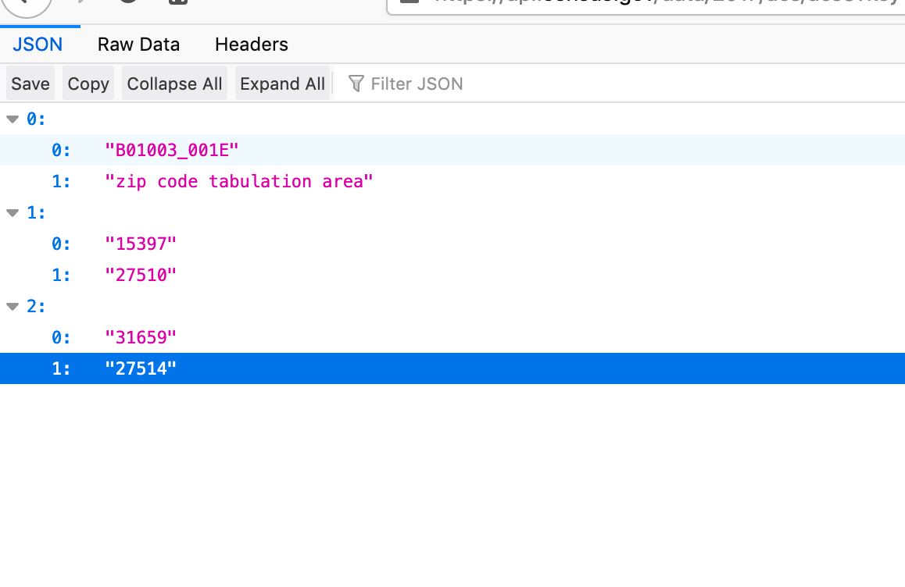

Using TidyCensus package

Getting Started
Application Programming Interface (API) is a software intermediary that allows two applications to talk to each other. For example, when you use an app on your phone, it connects to the internet, queries a server in a specific way. The server responds to the query, by retrieving the data, aggregating/interpreting/managing it and sending it back to the phone. The application then interprets that data and presents you with the information you wanted in a readable way. While API are not soley based on internet based queries, these are becoming increasingly important. In this tutorial, we are going to use API to query and process US Census data via http protocol on the fly, instead of downloading them as csv files.
To get started you need a US census API key. Signup for one and store it in a secure place. Whenever “YOUR_API_KEY” appears in the code below, you should substitute this key.
Querying Census Servers
Different APIs have different requirements, so you will have to use the documentation specific to the endpoint. To illustrate, let’s use the American Community Survey API. For example, paste the following into your web browser after suitably editing for the “YOUR_API_KEY”
https://api.census.gov/data/2017/acs/acs5?key=[YOUR_API_KEY]&get=B01003_001E&for=zip%20code%20tabulation%20area:27514,27510
The output should look like the following in the JSON format

The results tell you that there are 15,397 people in ZCTA 27510 and 31,659 people in ZCTA 27514. Also, this would be a good time to refresh your understanding of the differences between Zipcodes and ZCTA
If you get this result, from your R script (instead of the browser), it is relatively straightforward to convert them into data structures you are familiar with, such as tables, tibbles and data.frames. See this post.
It is useful to understand the structure of the query
https://api.census.gov/data/2017/acs/acs5?is the base url. It tells the census servers that it is looking for 5 year ACS data that ends in 2017 i.e ACS 2012-2017.key=[YOUR_API_KEY]is the key to identify the client (i.e your browser/script) who is making the request.get=B01003_001Eis the variable name (Total population). For a full list, see herefor=zip%20code%20tabulation%20area:27514,27510for the census geography ZCTA for Chapel Hill(27514) and Carrboro (27510). The%20is a hexademical representation of “unsafe” space character. There are many such special characters that need to be properly encoded, if they need to be passed to the server.Note that the all the arguments are concatenated using
&.
This structure is unique to Census and ACS APIs and endpoints. For other APIs you will have to refer to their documentation. And it is also likely that these structures will change over time, which may explain why your code may stop working after a while.
Exercise
Practise the following in the web browser by constructing the right URL.
- Use the endpoint for the decennial census and get the population for all the zipcodes in Durham, NC.
- Use the ACS 2016 endpoint and get the population for all the census tracts in Orange County, NC.
- Use the ACS 2013-2018 and get the households under poverty in each census tracts in Orange County, NC
TidyCensus
While the above is a generic way of constructing the query and getting the results using APIs, tidycensus is a package that wraps this all in different convenience functions such as get_decennial and get_acs. Note that, this package is tailored only towards US Census and not for any other Census agencies or for that matter other US government data.
In the rest of the tutorial, I am going to demonstrate how to download, construct and visualise unemployment rates and poverty rates at a Census tract level. We are going to use the 5 year ACS 2012-2017 data.
Poverty Rates using TidyCensus
library(tidyverse)
library(sf)
library(tidycensus)
census_api_key("YOUR_KEY_HERE", install=TRUE)To get the poverty level, you can use B17001_01 (persons for whom poverty level is tracked) and B17001_002 (persons whose income in the last 12 months was below poverty level). Use the get_acs function for ACS.
povrate17 <-
get_acs(geography = "tract", variables = "B17001_002", summary_var = 'B17001_001',state = "NC", geometry = TRUE, year = 2017) %>%
rename(population = summary_est) %>%
filter(population>0)%>%
mutate(pov_rate = estimate/population) %>%
select(GEOID, NAME, population, pov_rate)
povrate17
# Simple feature collection with 2162 features and 4 fields
# geometry type: MULTIPOLYGON
# dimension: XY
# bbox: xmin: -84.32187 ymin: 33.84232 xmax: -75.46062 ymax: 36.58812
# CRS: 4269
# First 10 features:
# GEOID NAME population
# 1 37001020100 Census Tract 201, Alamance County, North Carolina 3704
# 2 37001020200 Census Tract 202, Alamance County, North Carolina 4127
# 3 37001020300 Census Tract 203, Alamance County, North Carolina 7676
# 4 37001020400 Census Tract 204, Alamance County, North Carolina 6708
# 5 37001020501 Census Tract 205.01, Alamance County, North Carolina 3565
# 6 37001020502 Census Tract 205.02, Alamance County, North Carolina 3987
# 7 37001020601 Census Tract 206.01, Alamance County, North Carolina 3008
# 8 37001020602 Census Tract 206.02, Alamance County, North Carolina 2538
# 9 37001020701 Census Tract 207.01, Alamance County, North Carolina 4251
# 10 37001020702 Census Tract 207.02, Alamance County, North Carolina 4520
# pov_rate geometry
# 1 0.25566955 MULTIPOLYGON (((-79.45844 3...
# 2 0.29585655 MULTIPOLYGON (((-79.43321 3...
# 3 0.22889526 MULTIPOLYGON (((-79.41992 3...
# 4 0.33631485 MULTIPOLYGON (((-79.46613 3...
# 5 0.29789621 MULTIPOLYGON (((-79.49342 3...
# 6 0.30097818 MULTIPOLYGON (((-79.47267 3...
# 7 0.00831117 MULTIPOLYGON (((-79.49738 3...
# 8 0.05122143 MULTIPOLYGON (((-79.47542 3...
# 9 0.06774876 MULTIPOLYGON (((-79.49833 3...
# 10 0.21371681 MULTIPOLYGON (((-79.48519 3...The above code downloads and constructs the poverty rate for census tracts. Note the omission of tracts that have zero population. Also note the blithe use of estimates as true values.
ACS is a survey and therefore the estimates have Margins of Error (MOE). We are ignoring them here, but they pose serious problems, especially at sub county geographies and finer age and sex sub categories. Ignore them at your peril.
To visualise this, we can use the tmap package.
library(tmap)
povrate17 %>%
mutate(pov_rate = pov_rate*100) %>%
tm_shape() +
tm_polygons("pov_rate",
title = "Poverty Rate", # This renames the title of th variable in the legend.
style = "cont",
border.col = NULL,
legend.format=list(fun=function(x) paste0(formatC(x, digits=0, format="f"), "%"))) + # This formats the numbers in the legend
tm_legend(legend.position = c("left", "top"))
It should be apparent by now that choices of colors, cuts and linewidths etc. dramatically alter the visual evidence produced by the map. See for example,
povrate17 %>%
mutate(pov_rate = pov_rate*100) %>%
tm_shape() +
tm_polygons("pov_rate",
title = "Poverty Rate",
style = "quantile",
palette = "seq",
border.col = NULL,
legend.format=list(fun=function(x) paste0(formatC(x, digits=0, format="f"), "%"))) +
tm_legend(legend.position = c("left", "top"))
Exercise
Experiment with different options in the above maps for colors, breaks, border widths, projections etc and note the differences in visual evidence it produces.
Instead of the point estimates, create a map of the Margins of Errors to understand the geographic distribution of the uncertainty in the poverty rate estimates. See Kyle Walker’s page on this topic
Instead of 5 year ACS, map using 1 year ACS for 2017.
Unfortunately ACS data at the tract level can be downloaded at most for each state. If we want to download it for the entire US, we need to automate the calls for each state and assemble the dataset. Fortunately, this is quite straightforward in R. I am going to demonstrate this for 10 states, for the sake of simplicity.
data("fips_codes") # This is a dataset inside tidycensus package
unique(fips_codes$state_code)[1:10] %>% # We extract unique state FIPS codes and subset the first 10
map(function(x){get_acs(geography = "tract", variables = "B17001_002", summary_var = 'B17001_001',
state = x, geometry = TRUE, year = 2017)}) %>% #Note the use of argument x. We are simply applying the custom built function for each of the 10 states
reduce(rbind) %>% # The list of 10 elements is reduced using 'row binding' to create one single tibble. read up on these map and reduce functions in purrr. They are key to functional programming paradigm
rename(population = summary_est) %>%
filter(population>0)%>%
mutate(pov_rate = estimate/population) %>%
select(GEOID, NAME, population, pov_rate) %>%
dim
Exercise
Do the above for all states in the US and map the poverty rate. Troubleshoot when this fails. Hint: There are 57 unique state_codes, only 50 states in the United States.
Instead of tm_polygons use tm_bubbles and create a map of poverty across the United States.
Unemployment Rates using TidyCensus
Unemployment rate is trickier, because it needs to track both the labour force as well as unemployed persons. In general, we consider people of the ages between 16 and 64 to be in the labour force. It turns out that ACS only provides labour force and unemployment for males and females separtely and by different age categories. So we need to assemble them and combine them. We return to NC for the sake of simplicity.
# Variable names
#Labour Force
lf_m <- paste("B23001_", formatC(seq(4,67,7), width=3, flag="0"), "E", sep="") # Males. Check to make sure these are indeed the variables representing the labor force for men in different age categories
lf_f <- paste("B23001_", formatC(seq(90,153,7), width=3, flag="0"), "E", sep="") # Females
lf_t <-
get_acs(geography='tract', variables = c(lf_m, lf_f), state="NC", year=2017)%>%
group_by(GEOID) %>%
summarize(lf_est = sum(estimate, na.rm=T))
#Unemployed
unemp_m <- paste("B23001_", formatC(seq(8,71,7), width=3, flag="0"), "E", sep="")
unemp_f <- paste("B23001_", formatC(seq(94,157,7), width=3, flag="0"), "E", sep="")
unemp_t <-
get_acs(geography='tract', variables = c(unemp_m, unemp_f), state="NC", year=2017)%>%
group_by(GEOID) %>%
summarize(unemp_est = sum(estimate, na.rm=T))
unemprate17 <-
left_join(lf_t, unemp_t, by=c('GEOID'='GEOID')) %>% #Look up joining tables. It is incredibly useful to merge data
filter(lf_est >0) %>%
mutate(unemp_rate = unemp_est/lf_est)Exercise
Compute unemployment rate for more meaningful classes (Women, Youth etc.) and visualise it. Are there differences in the spatial distribution?
What about the unemployment rate of gender queer groups?
Is the spatial distribution of unemployment rate, same as the spatial distribution of poverty rate? On some ocassions it may be useful to put those maps side by side (small multiples in Tufte parlance) and compare them. Fortunately, tmap does it automatically, when you supply multiple variables.
unemprate17 %>%
left_join(povrate17 , by=c("GEOID"="GEOID")) %>%
st_as_sf() %>%
tm_shape() +
tm_polygons(c("pov_rate", "unemp_rate"),
title = c("Poverty Rate", "Unemployment Rate"),
style = "quantile",
palette = "seq",
border.col = NULL,
legend.format=list(fun=function(x) paste0(formatC(x, digits=2, format="f"), "%"))) +
tm_legend(legend.position = c("left", "top"))
It should be relatively obvious that this visualisation does not tell us much about the correlation between poverty and unemployment rates. It is better to visualise them as a scatter plot
unemprate17 %>%
left_join(povrate17 , by=c("GEOID"="GEOID")) %>%
ggplot() +
geom_point(aes(x=unemp_rate, y=pov_rate), alpha=.3) +
geom_smooth(aes(x=unemp_rate, y=pov_rate), method='lm') +
ylab('Poverty Rate') + xlab('Unemployment Rate')
As you can see, there is strong linear relationship between poverty rate and unemployment rate. Notice the range of values on the axes. While unemployment rate ranges from 0 to 40%, poverty rate ranges from 0 to 86%, suggesting that poverty may be more acute than unemployment. Furthermore, if you just focus on the average relationship, you will miss the substantial variance around the relationship. It may be useful to identify, some of the outliers and focus on them in the map.
One way to identify them is perhaps to look at the predictions made by the regression line and if the actual value is higher or lower than the prediction interval, we can call them outliers.
dat17 <-
unemprate17 %>%
inner_join(povrate17 , by=c("GEOID"="GEOID"))
mod1 <- lm(pov_rate ~ unemp_rate , data=dat17)
dat17 <- cbind(dat17, predict(mod1, interval = 'prediction'))
dat17 %>%
mutate(outlier = ifelse(pov_rate >= upr | pov_rate <= lwr, "Yes", "No") %>% as_factor) %>%
ggplot() +
geom_point(aes(x=unemp_rate, y=pov_rate, color = outlier), alpha=.5) +
ylab('Poverty Rate') + xlab('Unemployment Rate')
dat17 %>%
mutate(outlier = ifelse(pov_rate >= upr | pov_rate <= lwr, "Yes", "No") %>% as_factor) %>%
st_as_sf() %>%
tm_shape() +
tm_polygons("outlier",
palette = c('white', "red"),
border.col = "gray70",
border.aplha=.2,
lwd =.1
)
Note that this representation provides some insight but is infact not particularly helpful. Many small census tracts within the metropolitan areas are in the outliers but are not visbile because of small area that is obfuscated by the borders. The large tracts draw attention to the eye even when they are probably not most important from a policy perspective.
dat17 <-
dat17 %>% st_as_sf()
outliers<- dat17 %>%
filter(pov_rate >= upr | pov_rate <= lwr)
tm_shape( dat17) +
tm_borders(lwd=.1, alpha=.5) +
tm_shape(outliers)+
tm_bubbles(col="red", size=.5, alpha=.3, border.col='gray90'
)
** Exercise **
The above map may not be even the right story to tell. It could very well be that the focus should be on outliers that have high poverty and high unemployment rates, perhaps also places that have at least some threshold of population levels. Make some judgements about these and create a differnt visualisation.
Conclusions
This tutorial is about how to use APIs to access US Census data. Becoming quite familiar with the quirks of the Census data is quite useful for planners. But the ease with which these data can be queried does not obviate the need for careful consideration of what kinds of analysis and visualisations are needed and what kinds of compelling stories that need to be told.